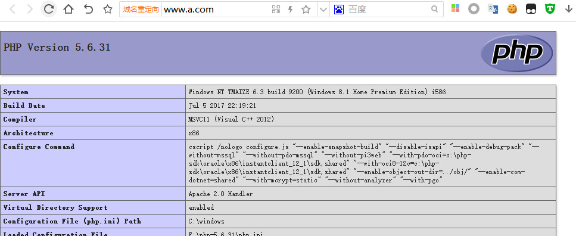
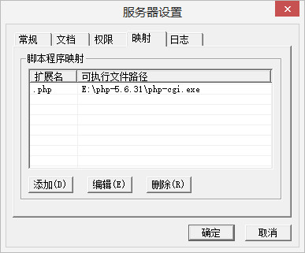

这里以Windows系统为例，linux的配置在之前的lnmp环境配置中有介绍
PHP
下载安装
在官网的下载页面去下载，不同的系统有不同的选择，这里选择5.6版本VC11 x86 Thread Safe
下载好了之后解压到一个目录等待后续配置
php工作方式
在配置之前有必要了解一下php的工作方式。详细划分可以分为五种工作方式：CGI,FAST-CGI,CLI,ISAPI,APACHE模式
-
CGI（通用网关接口/Common Gateway Interface）在CGI模式下，如果客户机请求一个php文件，Web服务器就调用php.exe去解释这个文件，然后再把解释的结果以网页的形式返回给客户机。一般是可执行程序，例如EXE文件，和WEB服务器各自占据着不同的进程,而且一般一个CGI程序只能处理一个用户请求。这样，当用 户请求数量非常多时，会大量占用系统的资源，如内存、CPU时间等，造成效能低下。
-
ISAPI（Internet Server Application Program Interface）是微软提供的一套面向WEB服务的API接口，它能实现CGI提供的全部功能，并在此基础上进行了扩展，如提供了过滤器应用程序接 口。ISAPI应用大多数以DLL动态库的形式使用，可以在被用户请求后执行，，在处理完一个用户请求后不会马上消失，而是继续驻留在内存中等待处理别的 用户输入。此外,ISAPI的DLL应用程序和WEB服务器处于同一个进程中，效率要显著高于CGI
-
FastCGI是可伸缩架构的CGI开放扩展，其主要行为是将CGI解释器进程保持在内存中并因此获得较高的性能。传统的CGI解释器的反复加载是 CGI性能低下的主要原因，如果CGI解释器保持在内存中并接受FastCGI进程管理器调度，则可以提供良好的性能、伸缩性等
-
cli是php的命令行运行模式，大家经常会使用它，但是可能并没有注意到（例如：我们在linux下经常使用 “php -m”查找PHP安装了那些扩展就是PHP命令行运行模式）
-
PHP作为Apache模块，Apache服务器在系统启动后，预先生成多个进程副本驻留在内存中，一旦有请求出现，就立即使用这些空余的子进程进 行处理，这样就不存在生成子进程造成的延迟了。这些服务器副本在处理完一次HTTP请求之后并不立即退出，而是停留在计算机中等待下次请求。对于客户浏览 器的请求反应更快，性能较高。
Apache
下载安装
去Apache Haus下载安装包
下载时要注意编译的环境
Windows中分为两种方式，一种是安装包的方式安装，还有是解压版安装
安装包的安装和一般程序的安装方式一样
解压版的解压完毕后要把它安装到服务中
进入到Apache24\bin目录中，通过httpd -k install -n "apache24"命令将http安装到服务中
运行
进入到Apache24\bin目录中，通过ApacheMonitor.exe的图形界面来开启或者关闭apache
由于将apache安装到了系统服务中，可以通过net start apache24来启动apache服务net stop apache24来关闭apache服务
在浏览器中打开127.0.0.1如果出现页面则表示成功启动
配置
-
多端口配置
apache可以监听多个端口，在httpd.cconf文件中添加一行
Listen 81即可在80，80端口访问 -
模块配置
apache有众多的模块，比如
LoadModule actions_module modules/mod_actions.so然而并不是所有的模块都是开启的，可以通过取消注释来开启一些模块
或者通过添加新的LoadModule行来添加外部模块，比如添加php支持
LoadModule php5_module "E:/php-5.6.31/php5apache2_4.dll" # php目录下php.ini-developmentc重命名为php.ini PHPIniDir "E:/php-5.6.31" AddType application/x-httpd-php .php -
配置虚拟目录和权限
默认是安装目录下的htdocs，我们可以自行设置这个目录
DocumentRoot "D:/server" # 先拒绝所有 <Directory /> AllowOverride none Require all denied </Directory> <Directory "D:/server"> Options Indexes FollowSymLinks AllowOverride None Require all granted </Directory> -
配置虚拟主机
取消配置文件中
Include conf/extra/httpd-vhosts.conf这一行的注释配置文件在
conf/extra/httpd-vhost.conf如果配置了虚拟主机就不要配置主配置文件下的虚拟目录了，这样容易混淆
为了方便配置目录权限顺便把主文件的目录配置也剪切过来
# 先拒绝所有,后面再放开需要的 <Directory /> AllowOverride none Require all denied </Directory> <Directory "${SRVROOT}/htdocs"> Options Indexes FollowSymLinks AllowOverride None Require all granted </Directory> <Directory "D:/server"> AllowOverride None Require all granted DirectoryIndex index.html index.php </Directory> # 这个最后匹配 <VirtualHost _default_:80> DocumentRoot "${SRVROOT}/htdocs" </VirtualHost> <VirtualHost *:80> ServerAdmin tmaize@qq.com DocumentRoot "D:/server" ServerName a.com ServerAlias www.a.com </VirtualHost>
测试
这里省略掉了mysql的配置，在windows下，mysql配置比较简单
在刚刚配置的虚拟主机的虚拟目录下添加index.php
<?php
phpinfo();
?>
在本地hosts中重定向域名
127.0.0.1 a.com
127.0.0.1 www.a.com
访问http://www.a.com/

拓展
CGI方式的配置
其实apache也支持php的cgi运行方式的配置
这里以EasyWebServer（一个很简单的webserver 下载EasyWebSvr1.9.zip）为例，很简单，只需要点几下就可以了
